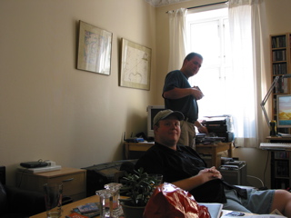
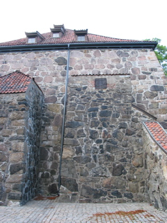
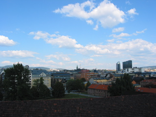

Landed in Oslo after 8ish hours of plane time and then rode on trains and trolleys to Erling’s place. We dropped our stuff at his place, let our legs be uncramped for a bit and then wandered off.

We checked out the Akershus Fortress before grabbing some food. Then to bed, we’ve an early flight tomorrow up to Kirkenes.
